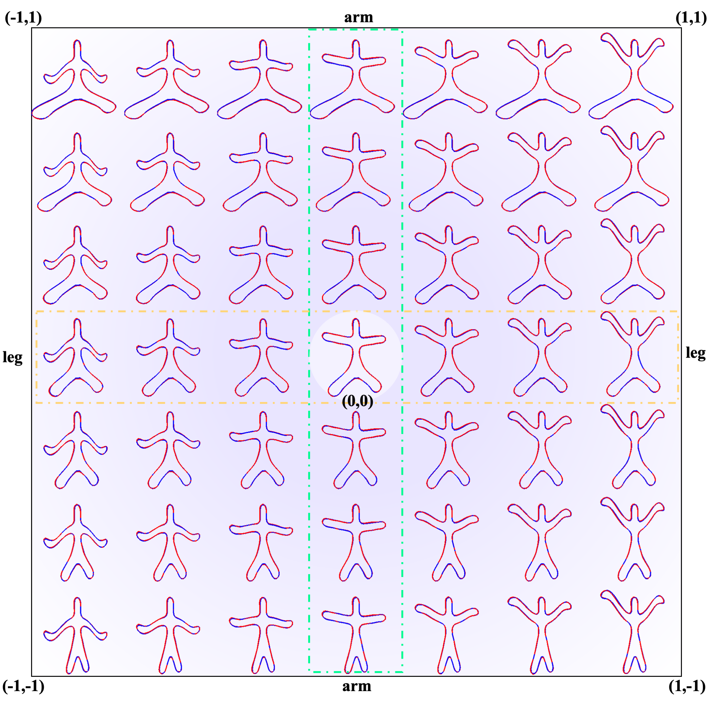
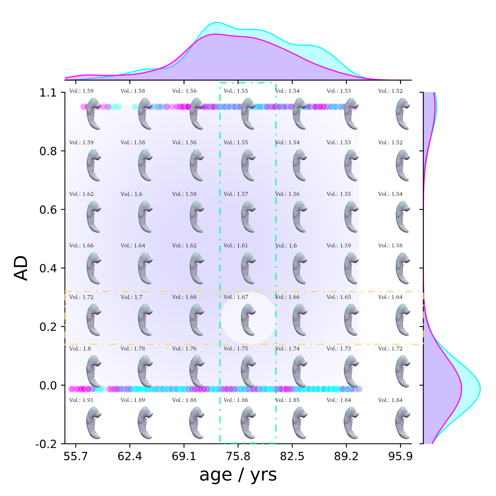
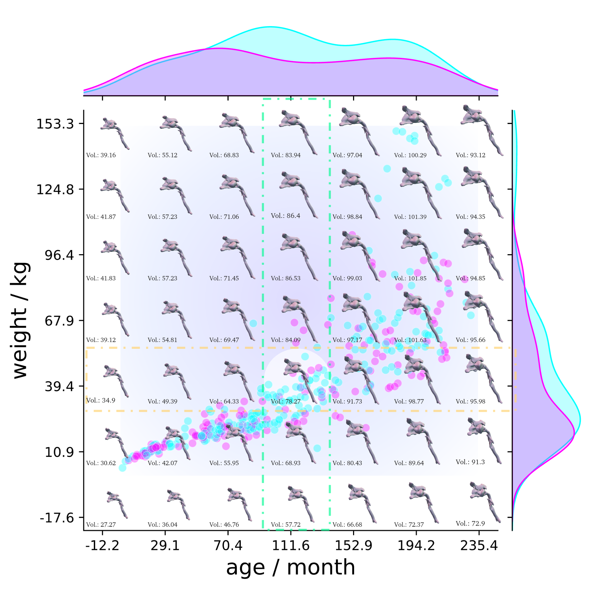

Motivation of NAISR

Deep implicit functions (DIFs) have emerged as a powerful paradigm for many computer vision tasks such as 3D shape reconstruction, generation, registration, completion, editing, and understanding. However, given a set of 3D shapes with associated covariates there is at present no shape representation method which allows to precisely represent the shapes while capturing the individual dependencies on each covariate. Such a method would be of high utility to researchers to discover knowledge hidden in a population of shapes. For scientific shape discovery, we propose a 3D Neural Additive Model for Interpretable Shape Representation (NAISR) which describes individual shapes by deforming a shape atlas in accordance to the effect of disentangled covariates. Our approach captures shape population trends and allows for patient-specific predictions through shape transfer. NAISR is the first approach to combine the benefits of deep implicit shape representations with an atlas deforming according to specified covariates. We evaluate NAISR with respect to shape reconstruction, shape disentanglement, shape evolution, and shape transfer on three datasets: 1) Starman, a simulated 2D shape dataset; 2) the ADNI hippocampus 3D shape dataset; and 3) a pediatric airway 3D shape dataset. Our experiments demonstrate that NAISR achieves excellent shape reconstruction performance while retaining interpretability.

Disentangled Shape Evolution for Starman. The blue shapes are the groundtruth shapes and the red shapes are the reconstructions.
Arm Movement
Leg Movement
Disentangled Shape Evolution for Pediatric Airways.
Age: from 0 - 240 months
Weight: from 0 - 160 kgs
Sex: from F to M
Disentangled Shape Evolution for ADNI Hippocampus.
Age: from 50 - 100 yrs old
AD: from health to AD
Edu.: from 0 - 30 years
Sex



@inproceedings{
jiao2024naisr,
title={\texttt{NAISR}: A 3D Neural Additive Model for Interpretable Shape Representation},
author={Yining Jiao and Carlton Jude ZDANSKI and Julia S Kimbell and Andrew Prince and Cameron P Worden and Samuel Kirse and Christopher Rutter and Benjamin Shields and William Alexander Dunn and Jisan Mahmud and Marc Niethammer},
booktitle={The Twelfth International Conference on Learning Representations},
year={2024},
url={https://openreview.net/forum?id=wg8NPfeMF9}
}